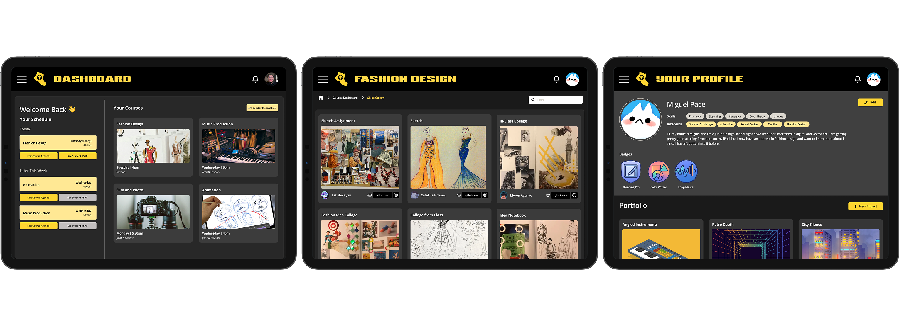
Learning Management for BootUp
A Community-Driven LMS for Creative Work, with Open Portfolios and Social Features
Role
UX Researcher + Designer
Collaborators
Ria Manathkar
Alexandra Slabakis
Briana Chen
Kavya Iyer
Timeline
14 weeks
This learning management system was designed for BootUp PGH, a creative technology education program based in Wilkinsburg, PA that provides access to digital literacy, technical tools, and creative expression for the local community. The platform supports both students and educators by combining work documentation, peer recognition, and flexible class management into one cohesive system.
Students can create and customize personal portfolios, submit and track projects, explore peer galleries, and exchange kudos to celebrate each other's work. Educators can manage class agendas, take attendance, view student progress, and provide feedback—all from a centralized dashboard.
Designed for the flexibility and culture intrinsic to BootUp, the platform balances lightweight documentation features that elevate student work, extending peer interactions outside the classroom, and making it easier for for BootUp to sustain engagement, track impact, and grow without losing its community-driven core.
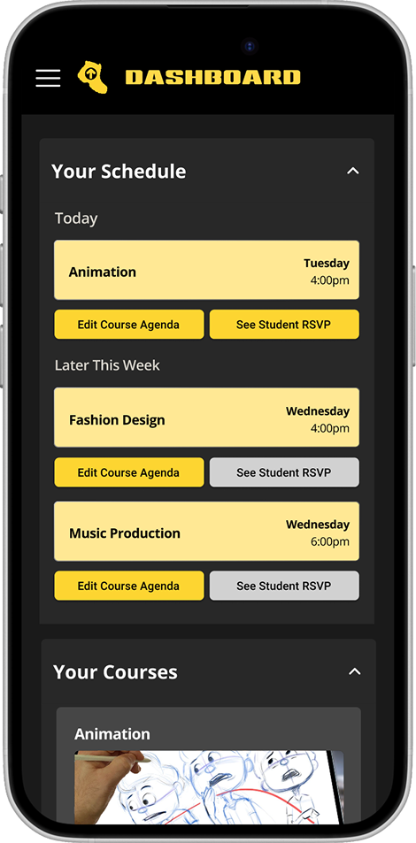
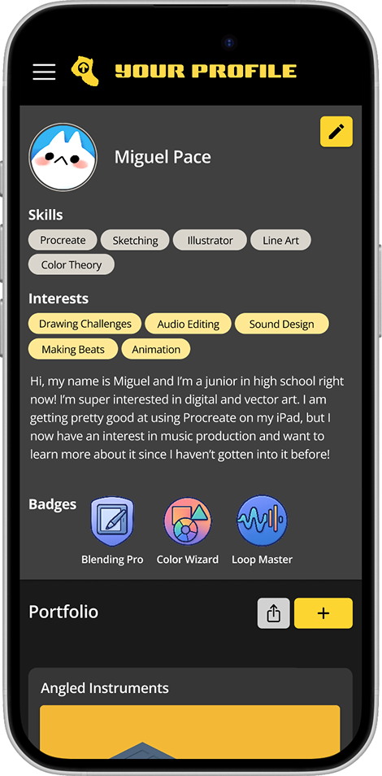
Welcome to BootUp!
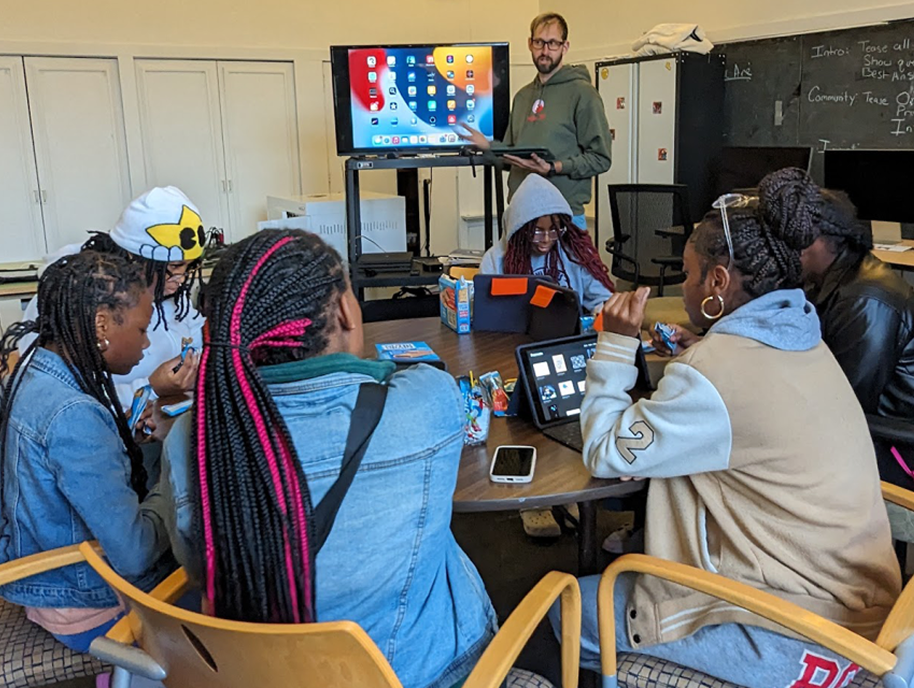
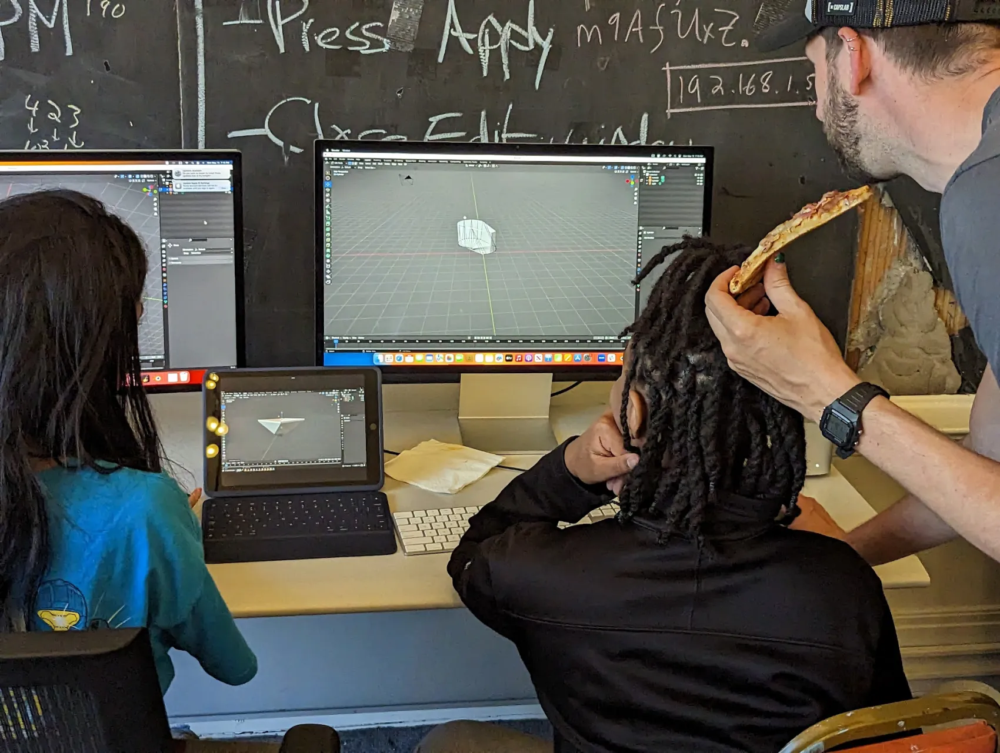
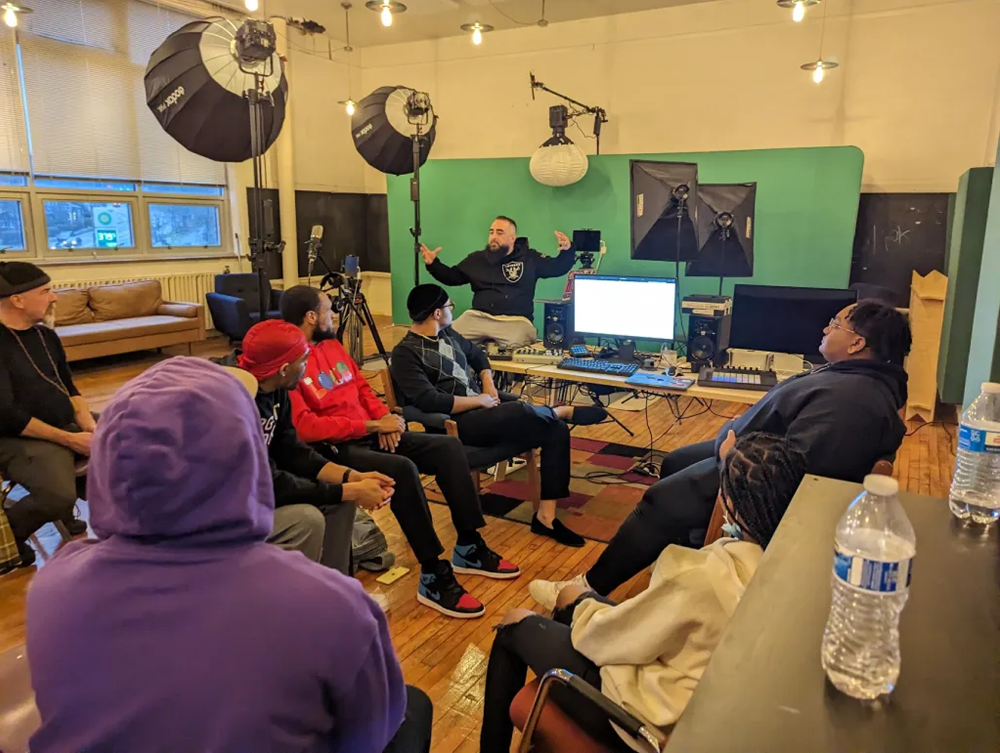
BootUp offers mobile and open-access sessions covering everything from street art to IT certifications. Their mission is to equip youth and adults with the tools, skills, and confidence to engage meaningfully with technology and shape their own creative identities—true to their name: Building Our Own Technology, Uplifting People (B.O.O.T.U.P).
BootUp came to our team with a key need: a way for students to track progress. Without consistent digital tools to track progress or stay connected between sessions, students lose momentum and educators struggle to build on prior learning. The client's vision was a mobile application that was student-centered, with gamification as a means of increasing student engagement.
To inform this vision (and broader our scope), we approached our research with a simple goal: to understand why and how students engage and what support educators need.
Research
To frame our research phase, we developed the following overarching questions:
- Why do students engage with technology-focused learning?
- How do educators track and support progress?
To answer these questions, our team conducted a multi-method research approach that allowed us to explore the BootUp experience from various perspectives.
-
Literature Review
To understand best practices in educational technology and youth motivation
We reviewed 17 peer-reviewed articles on student engagement, project-based learning, and digital portfolios. This helped us identify core themes like autonomy, meaningful feedback, and social interaction that shaped our later research and design criteria. -
Competitive Analysis
To explore existing tools that support engagement, documentation, and learning
We analyzed 12 education and social platforms—from Google Classroom to Fortnite—to understand how progress tracking, personalization, and collaboration are handled in both formal and playful environments. -
Classroom Observations
To see how BootUp's learning culture operates in real time
We observed four BootUp classes (e.g., Fashion Design, Music Production) to learn how students engaged with tools, how educators adapted their instruction, and what challenges emerged around tracking, continuity, and documentation. -
Student Interviews & Focus Groups
To understand student motivation and what they need to grow
We held informal interviews and focus groups during open hours. These sessions explored how students share work, seek feedback, and stay connected outside of class—and what tools might help them do so better. -
Educator Interviews & Focus Groups
To identify educator needs, pain points, and adaptive strategies
We conducted six informal interviews with BootUp instructors to understand how they support student progress, manage time across sessions, and balance engagement with administrative requirements.
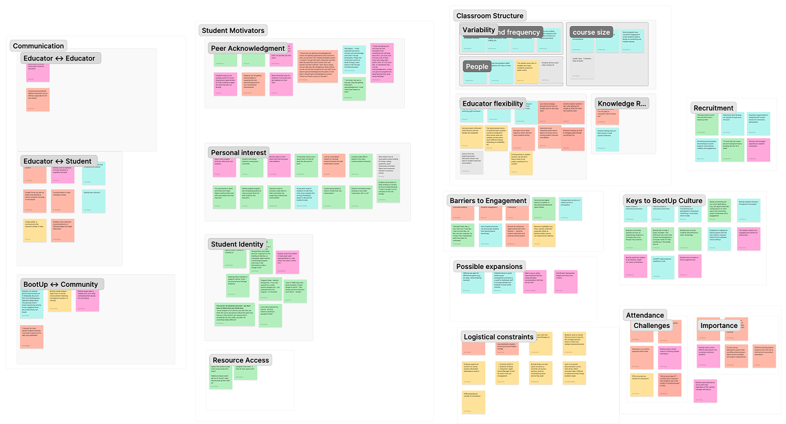
Our team synthesized our findings across all methods to extract the following insights:
- BootUp prioritizes relationships and engagement over documentation and data.
- Educators empower students to forge their own identities through technology.
- Tracking student progress is vital for program funding and growth.
- Educators must be highly adaptable to variable class content, size, and student skills and interests.
- Ongoing communication sustains student engagement.
- Building up confidence in students through validation is a key motivator in fostering their progress.
- Students arrive highly intrinsically motivated; student motivation is not the barrier.
These synthesized insights emphasized that our final solution must strengthen BootUp;s infrastructure to better support educators, who constantly adapt to varying class sizes, content, and skill levels, often with little or no time for documentation. At the same time, the solution must preserve BootUp’s community centered spirit by fostering social interaction, peer recognition, and accessible student tools for continued growth.
Ideation
Our ideation process began by translating research insights into a wide range of “How Might We” (HMW) questions. These helped us surface opportunity areas around recognition, flexibility, and documentation—without losing sight of BootUp’s values of creativity and community.
From dozens of HMWs, we identified four that consistently shaped our design direction:
- How might we encourage consistent participation and/or recognize student work to sustain BootUp’s sense of community beyond in-person sessions?
- How might we design a flexible system that helps educators respond to varied classroom contexts and needs?
- How might we integrate attendance and portfolio tracking without disrupting engagement?
- How might we encourage students to connect their skills across different subjects?
Overall, how might we preserve BootUp's community-centered spirit through a program management solution that fosters social interaction and peer recognition?
To quickly generate a range of ideas, each team member ran a round of Crazy 8s, sketching eight concepts in eight minutes. This rapid ideation method allowed us to visualize diverse solutions before grouping and prioritizing them.
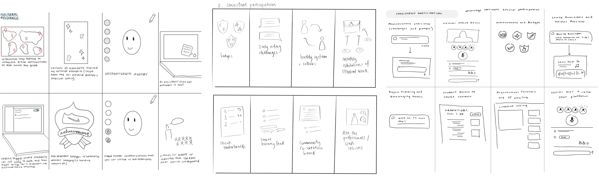
We then clustered the ideas, ultimately reaching three broader key categories:
- Open Remote Communication: Enabling seamless interaction between students and educators (ex: bulletins, remote activities).
- Work Documentation and Distribution: Ensuring work is captured, shared, and accessible (ex: student submissions, archives, portfolios, showcases).
- Educator Program Management Tools: Providing tools to support educators in managing student progress and courses, generally (ex. dashboards, rosters, class agendas).
After reviewing client feedback and evaluating feasibility for these concepts, we selected a focused set of features for lo-fi prototyping. These included core tools for class management (open agendas, student RSVP/attendance), student engagement (customizable portfolios, peer kudos, and work submissions), and asynchronous interaction (bulletins, resource sharing, and badges).
Prototyping, Testing, and Iteration
Lo-Fi Prototyping
The Prototype
We developed paper prototypes based on solution-informed user flows to explore how key features—such as student dashboards, open portfolios, class agendas, and bulletin boards—would integrate into BootUp's learning environment. These flows helped us validate tasks, surface required information at each step, and assess how our proposed system aligned with real classroom use.
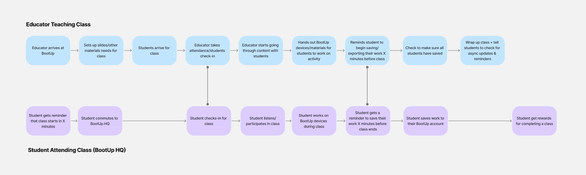
User flow testing revealed the need for a centralized educator dashboard, customizable student portfolios, and cross-platform compatibility. These insights informed our next step: creating an initial information architecture diagram to clarify system structure and guide wireframe development.
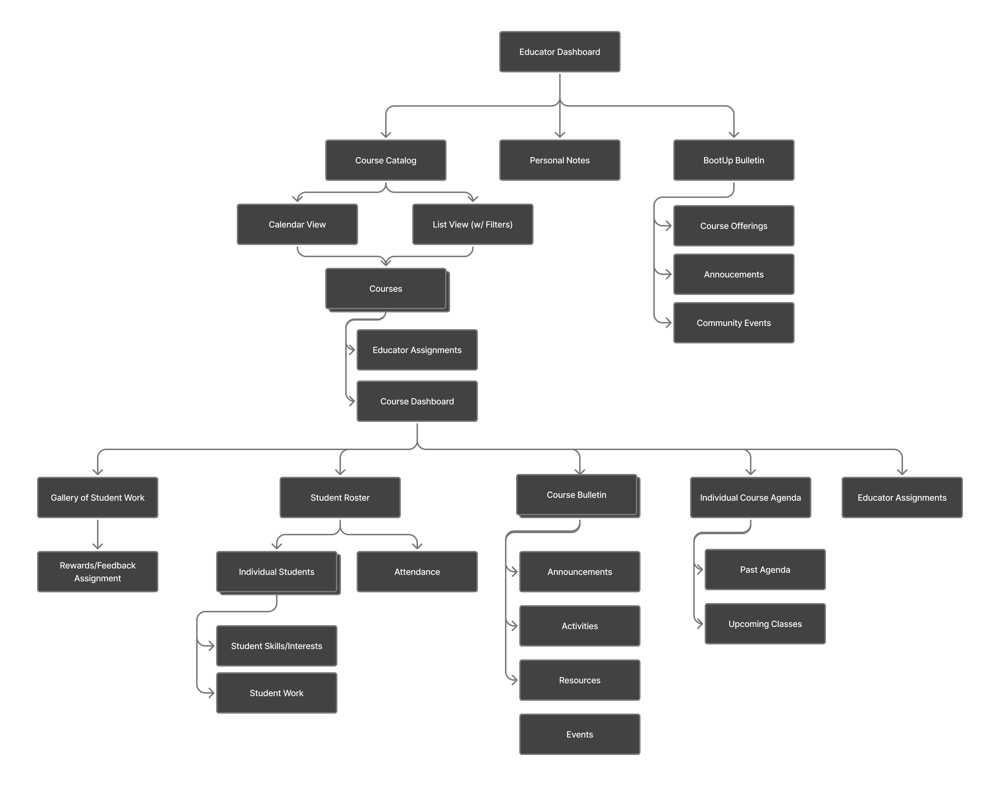
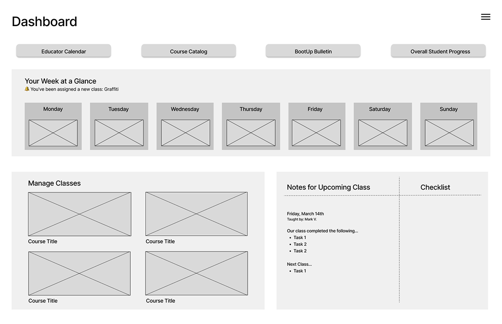
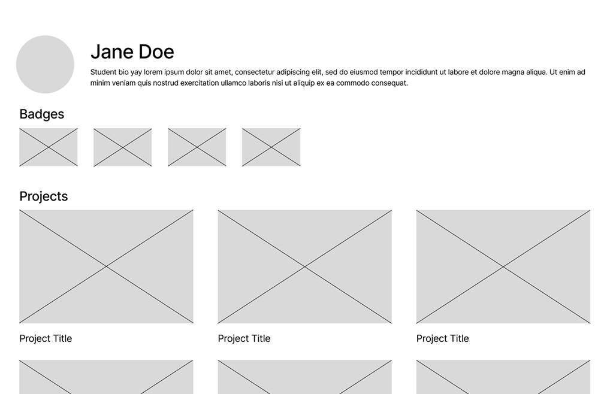
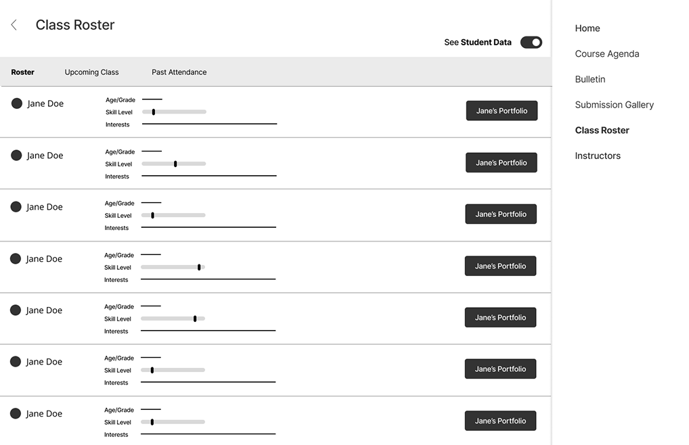
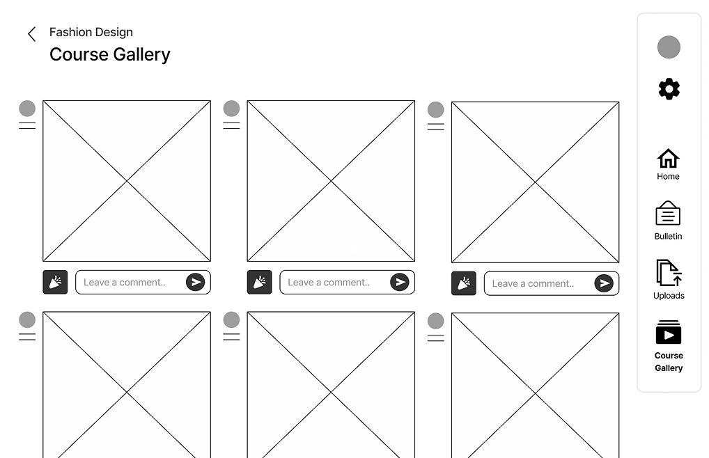
Testing and Findings
To evaluate navigational clarity and content flow, we conducted think-aloud usability tests using Wizard-of-Oz style paper prototypes.
We found that:
- Educators valued centralized tools and lightweight feedback options but needed clearer labels and more visible attendance tracking.
- Students responded well to the dashboard and bulletin but were confused by submission flows and portfolio organization. But, we found that the student experience required deeper attention—specifically around motivation, communication, and self-expression. This led us to plan a co-creation session with students to directly involve them in shaping the next iteration of the platform.
- Overall, both groups highlighted the need for more intuitive navigation, flexible customization, and clear boundaries between personal and shared content.
Mid-Fi Prototyping
Co-creation Session
Before prototyping, we conducted a student co-creation session using modular paper "widgets." Students were invited to design their ideal dashboard layout, reflect on how they interact with peer work, and share preferences around customization, visibility, and communication. This session revealed a strong desire for personalization, the importance of peer interaction and recognition, as well as flexible access to learning materials—all of which directly shaped our mid-fi design decisions.
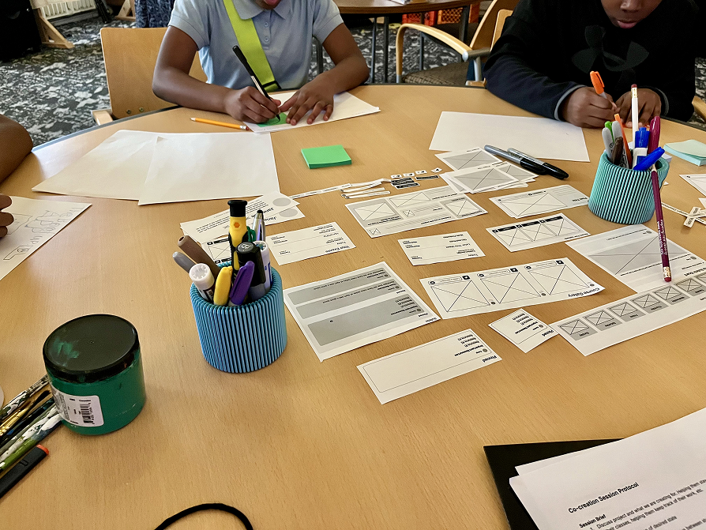
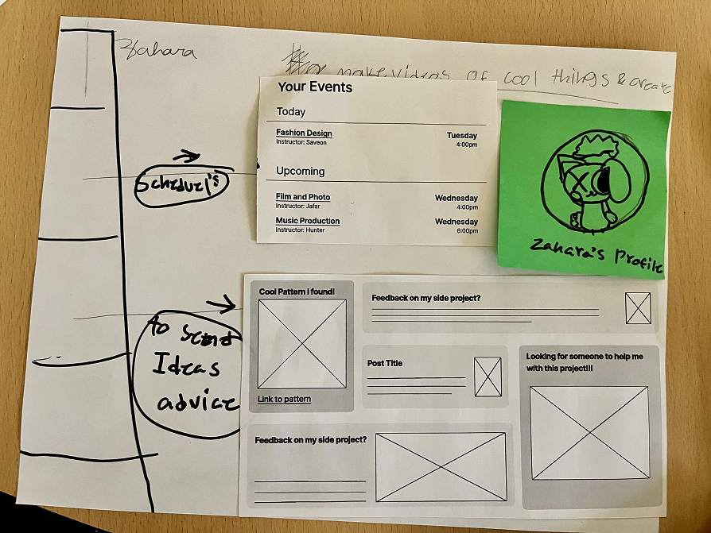
The Prototype
Building on lo-fi testing and student co-creation, our mid-fidelity Figma prototype introduced several key refinements. We reorganized the dashboard to reduce clutter by centralizing bulletin posts and streamlining educator tools like attendance and agenda editing. For students, we clarified the difference between personal portfolios and class galleries, added lightweight peer interactions (likes, props), and introduced flexible privacy settings for shared work. We also began incorporating visual elements—icons, consistent color cues, and basic typography—to improve navigation and simulate a more realistic experience for usability testing.
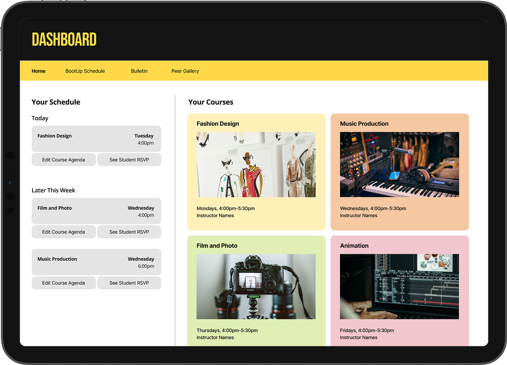
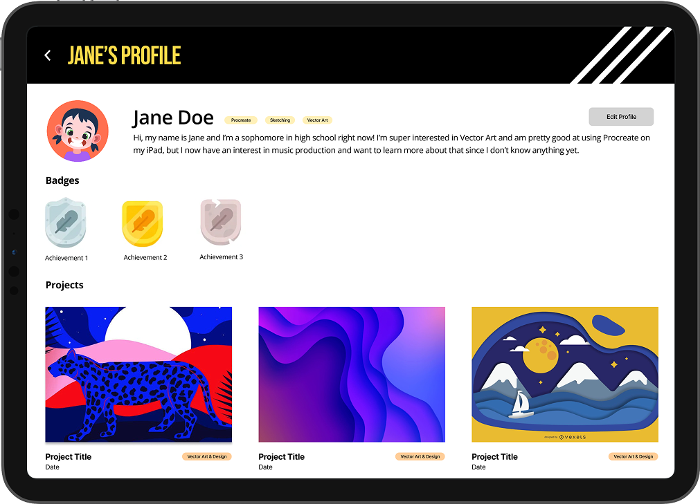
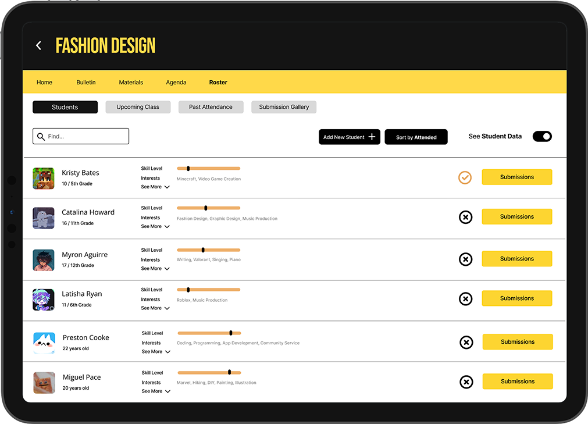
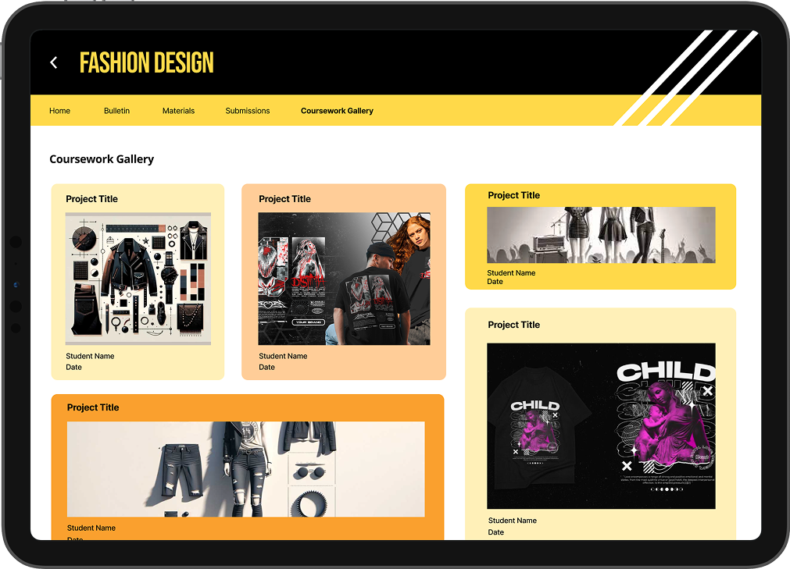
Testing and Findings
We conducted a second round of think-aloud testing with students and educators to evaluate whether the updated structure improved clarity, motivation, and usability.
We found that:
- Students wanted more ownership over portfolios, including the ability to set privacy levels and customize profile elements. Lightweight peer interaction tools like kudos were well received when optional.
- Educators emphasized easier access to attendance, student progress, and course content. They requested clearer separation between class and individual student views.
So, we refined dashboard logic, reduced feature redundancy, and clarified visual hierarchy—ensuring the interface better supported both engagement and clarity.
Hi-Fi Prototyping
The Prototype
Our high-fidelity prototype, built in Figma, delivered a complete and visually polished platform experience for both students and educators. It included core features like editable portfolios, peer kudos, course dashboards, real-time attendance tools, and educator scheduling management—optimized for both desktop, tablet, and mobile devices.
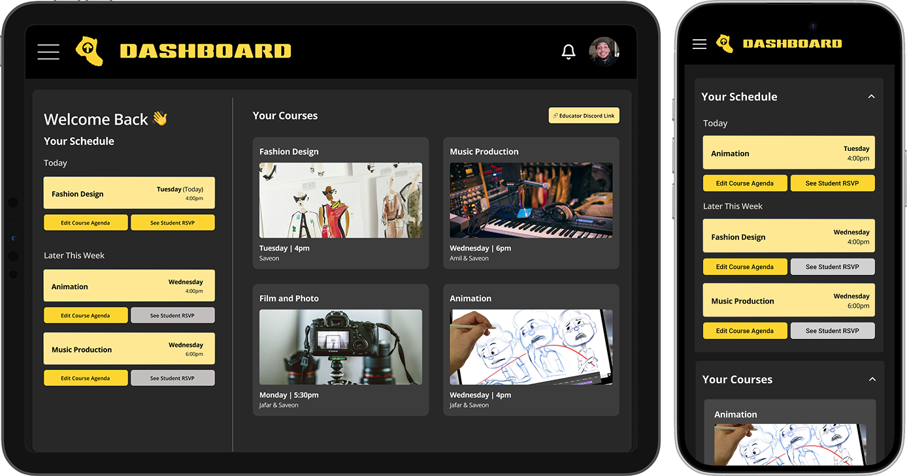
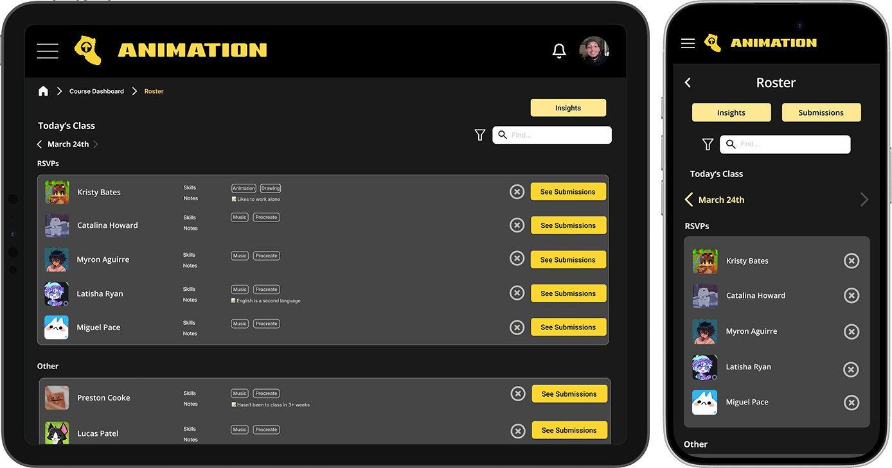
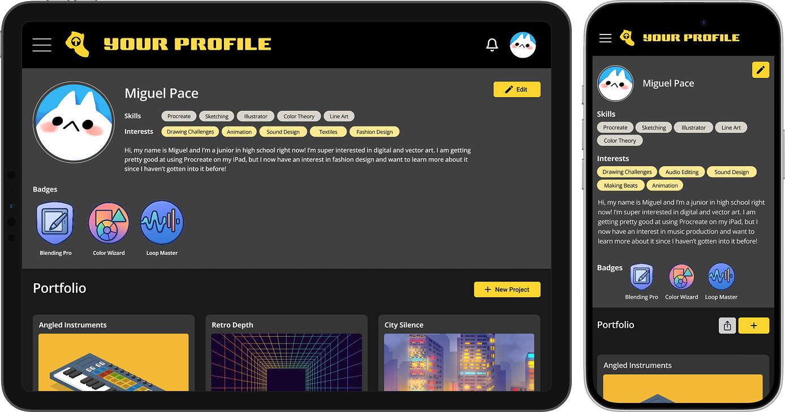
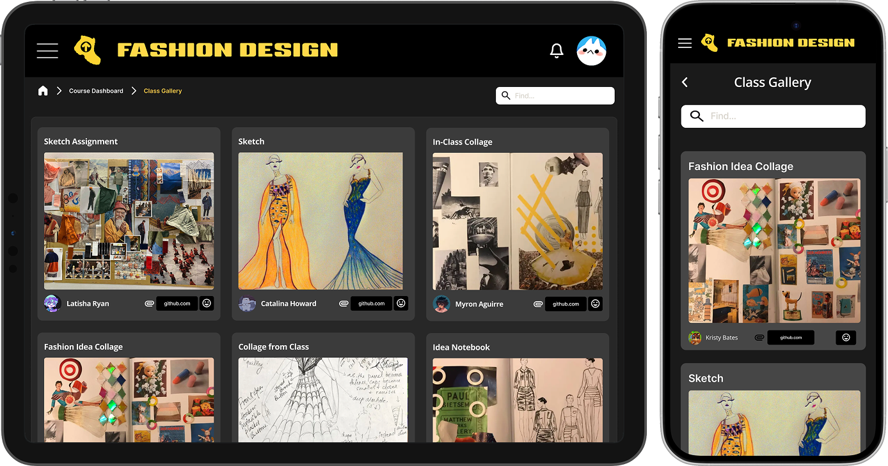
Testing and Findings
Using a final think-aloud protocol, students and educators completed realistic end-to-end tasks such as editing a portfolio, confirming attendance, posting to the bulletin, and reviewing class rosters. We also tested the mobile version to reflect how students engage with BootUp outside of the classroom.
We found that:
- Students praised the look and feel of the interface, especially the customizable portfolio and the ability to navigate easily between features. They requested clearer guidance around submission types and stronger dashboard anchoring (e.g., persistent home button).
- Educators appreciated the fluid scheduling tools and centralized access to rosters and student feedback. However, they noted pain points around back-navigation and occasional label ambiguity.
We refined layout consistency, improved iconography and button clarity, and finalized interaction flows to support developer handoff. The final prototype successfully balanced structured management with BootUp's culture of creativity and community.